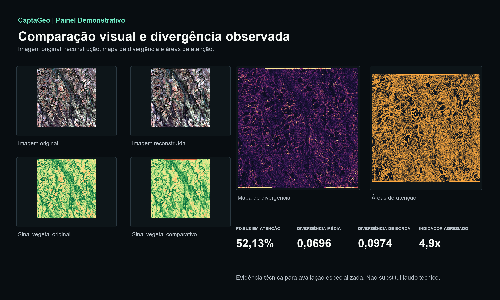
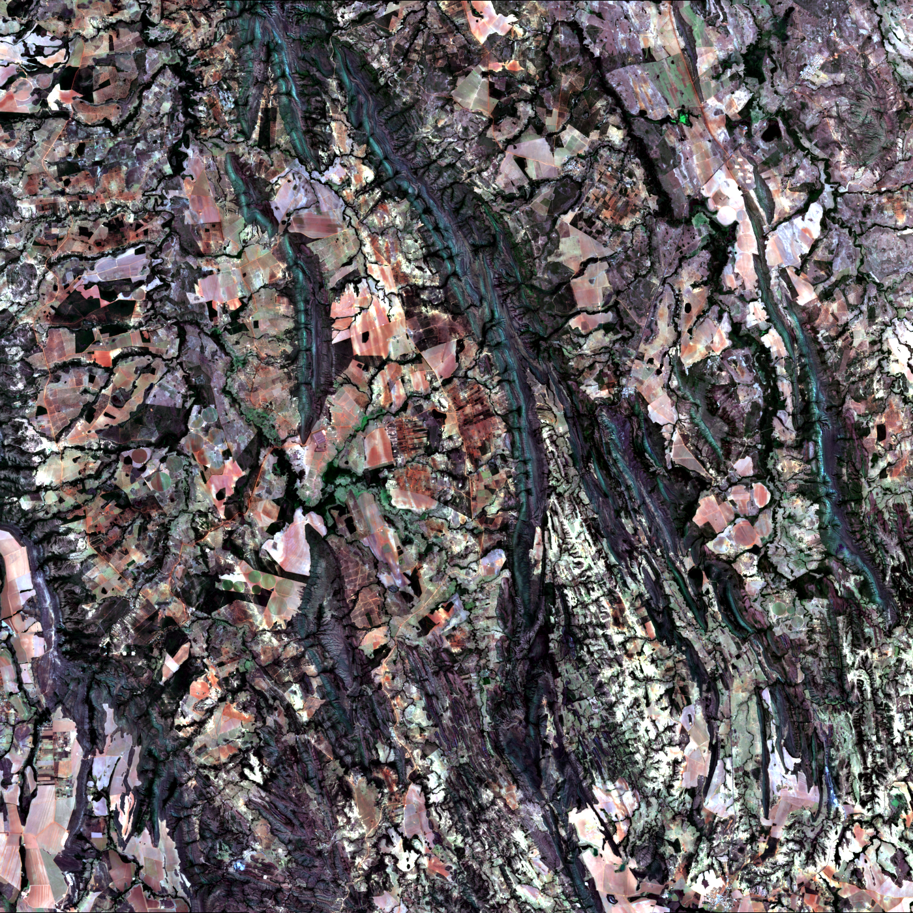
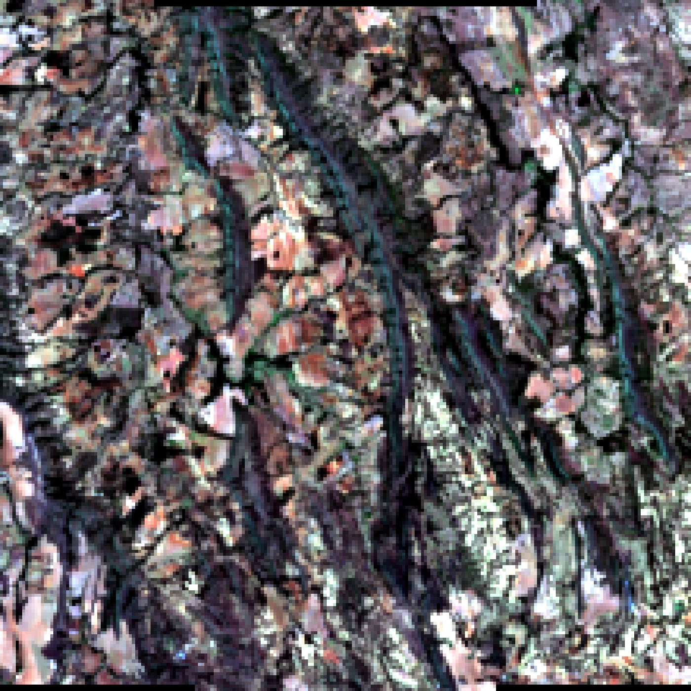
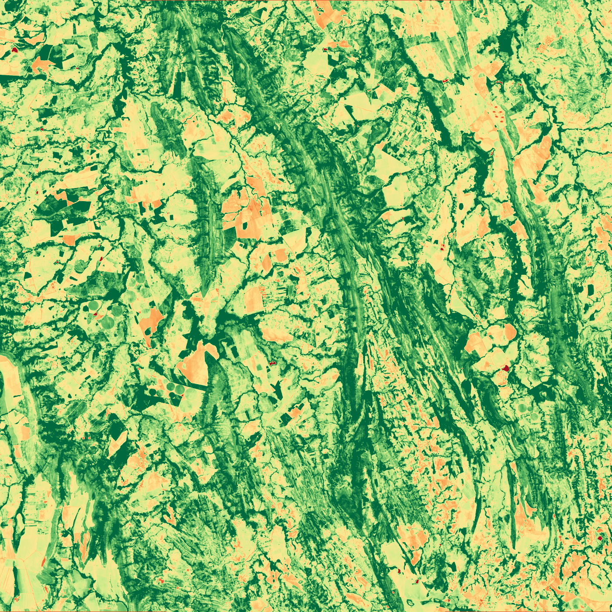
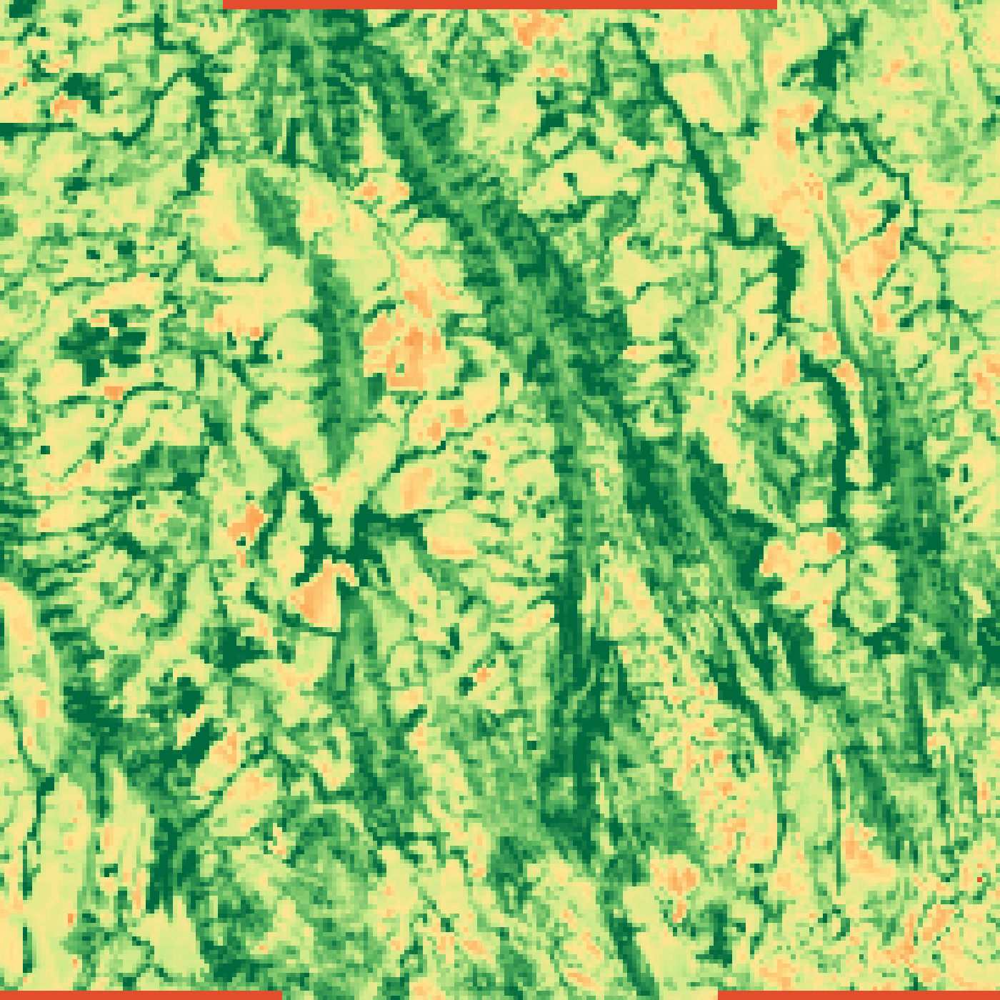
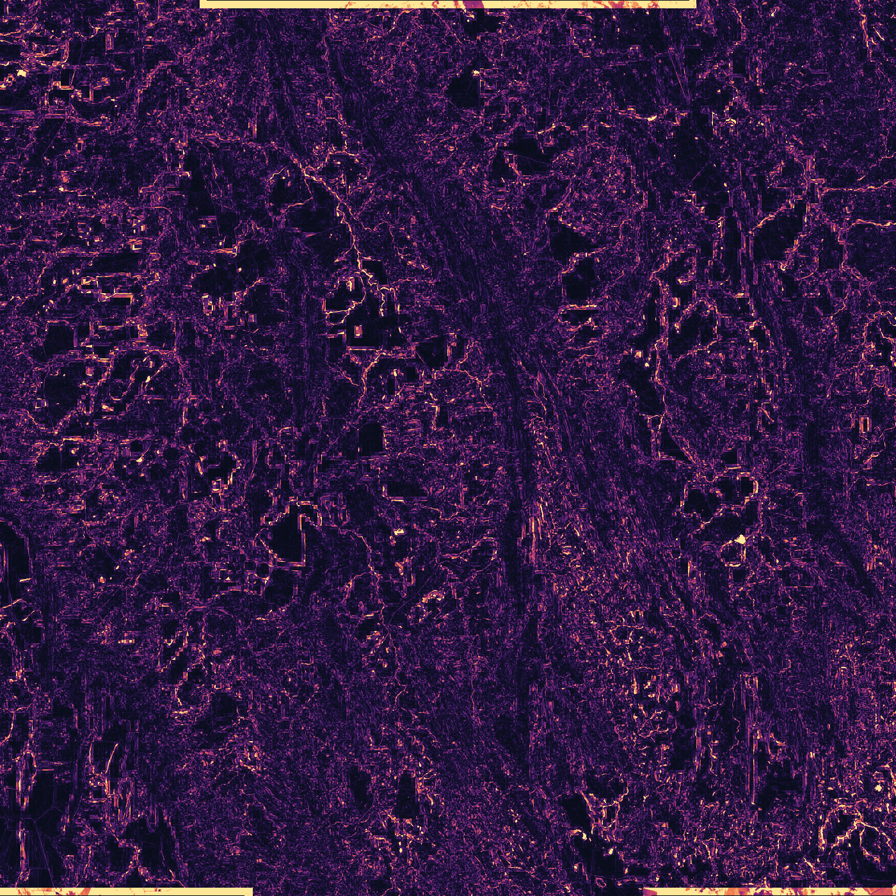
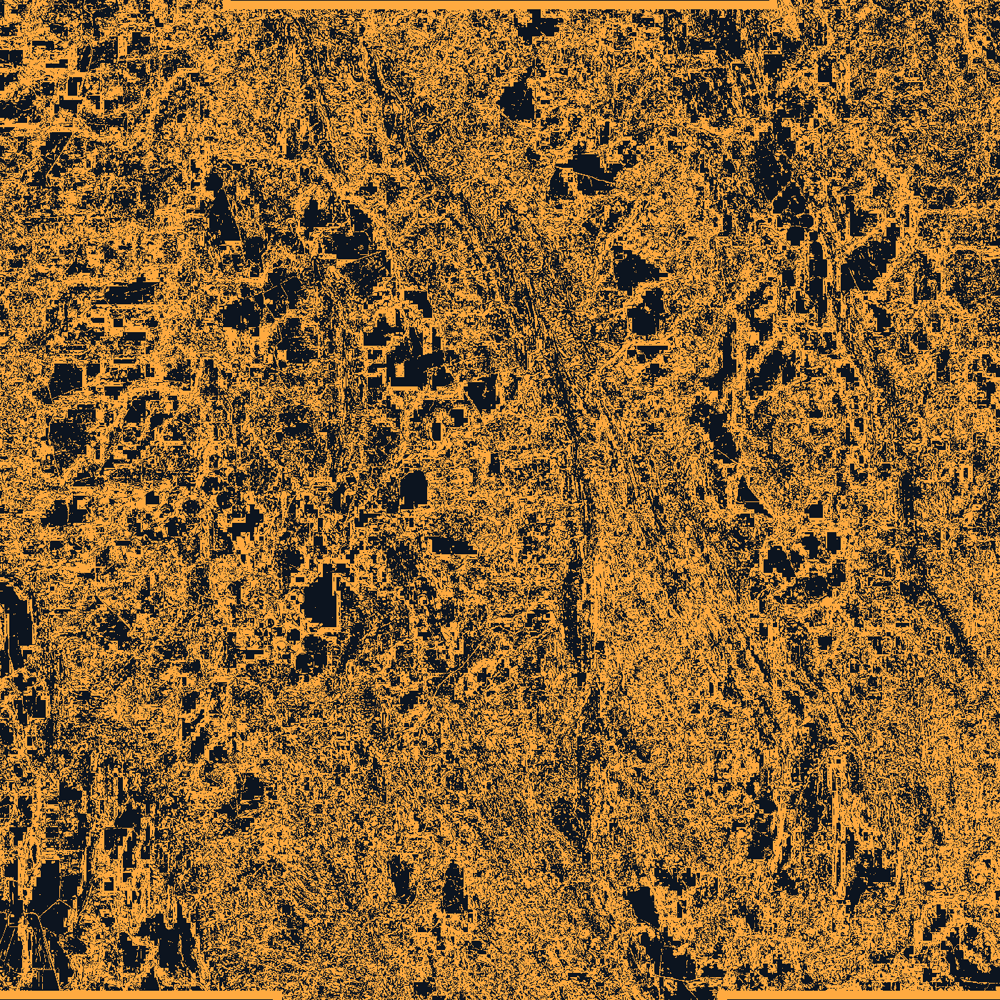

01
CaptaGeo | Protocolo técnico
Auditoria de integridade geoespacial
Imagens processadas podem simplificar o sinal territorial. A análise CaptaGeo verifica se leituras agrícolas, ambientais e territoriais ainda preservam variação espacial, bordas e sinais espectrais relevantes
Uma decisão agrícola, ambiental ou financeira baseada em imagem processada sem verificação pode estar usando um território simplificado demais para representar a realidade
52,13%
pixels em atenção
0,0696
erro médio
4,9x
indicador agregado

Definição
Integridade do dado utilizado na decisão
A avaliação pública concentra-se em comparação visual, mapas de divergência, variação medida e interpretação técnica
A imagem pode parecer organizada.
A questão é se o sinal ainda representa o território.
A questão é se o sinal ainda representa o território.
Protocolo CaptaGeo
Fluxo técnico de auditoria
Protocolo inicial para análise de integridade em sinais derivados de imagens de satélite
02
Preparação comparativa
03
Leitura espectral agregada
04
Diagnóstico de integridade
05
Evidência técnica
Demonstração
Demonstração técnica
Demonstração com amostra Sentinel-2. O objetivo é mostrar como divergências de sinal aparecem em imagens comparativas, mapas e métricas finais agregadas
- imagens comparativas
- mapa de divergência
- áreas de atenção
- métricas finais agregadas
- uso responsável da leitura técnica
As imagens representam saídas demonstrativas de avaliação especializada. A leitura pública apresenta comparação visual, divergência observada, variação medida e áreas de atenção

Painel Demonstrativo: comparação visual entre imagem original, reconstrução, mapa de divergência e áreas de atenção
Evidência visual medida
Painel Demonstrativo
Comparação visual entre imagem original, reconstrução, mapa de divergência e áreas de atenção. A demonstração não classifica uso do solo nem substitui laudo técnico; indica divergência observada e zonas que exigem revisão

Imagem original

Imagem reconstruída

Sinal vegetal original

Sinal vegetal comparativo

Mapa de divergência

Áreas de atenção
Relatório demonstrativo
Relatório demonstrativo
O relatório demonstra como uma auditoria CaptaGeo organiza área, fonte, métricas agregadas, mapa de divergência, áreas de atenção e interpretação técnica em um pacote rastreável para avaliação interna
Área analisada
Registro do recorte territorial, janela de análise e contexto de uso
Fonte utilizada
Identificação da origem geoespacial e das condições mínimas de leitura
Sinal vegetal comparativo
Leitura visual agregada para revisão técnica controlada
Mapa de divergência
Visualização das zonas onde as saídas comparativas apresentam maior diferença
Métricas principais
Pixels em atenção, divergência média, divergência de borda e indicador agregado
Interpretação técnica
Síntese objetiva do que foi observado e do que exige revisão
Limitações da análise
Registro do escopo, das premissas e dos limites do resultado demonstrativo
Saída
Entregáveis técnicos
Saída orientada a equipes de risco, auditoria, crédito, seguro, ESG, agro e monitoramento territorial
Relatório técnico em PDF
Documento consolidado com contexto, nota metodológica pública, mapas e métricas agregadas
Mapa de divergência
Visualização das áreas onde as saídas comparativas apresentam maior diferença
Áreas de atenção
Camada visual para destacar pixels e zonas que exigem revisão técnica
Resumo executivo
Leitura curta para decisão interna, sem substituir avaliação técnica final
Pacote de evidência
Arquivos visuais e métricos para rastreabilidade e compartilhamento
Tratamento dos dados
Como os dados são tratados
A página pública apresenta rastreabilidade, evidência técnica, leitura comparativa e métricas finais agregadas
Rastreabilidade
Registro de área, período, fonte, índice analisado e artefatos produzidos
Comparação controlada
Leitura lado a lado entre imagens comparativas, sinal vegetal e mapa de divergência
Métricas verificáveis
Pixels em atenção, divergência média, divergência de borda e indicador agregado
Uso responsável
Resultado apresentado como apoio técnico, não como decisão automática
Base técnica
Base de análise
Fontes compatíveis inicialmente
Dados Sentinel-2 (ESA), recortes geoespaciais de interesse e índices espectrais padrão como NDVI
Limitações assumidas
Resultado dependente de cobertura, período, qualidade da fonte, resolução e coerência do recorte analisado
Uso responsável
A CaptaGeo não substitui decisão pericial, agronômica, financeira ou regulatória. A auditoria indica perda de integridade, divergência espacial e zonas que exigem revisão técnica
Rastreabilidade
Comparação visual, variação medida e métricas agregadas sob o Protocolo CaptaGeo
Triagem técnica
Enviar área para triagem técnica
Encaminhamento inicial para avaliação de escopo, fonte disponível, período e tipo de análise geoespacial